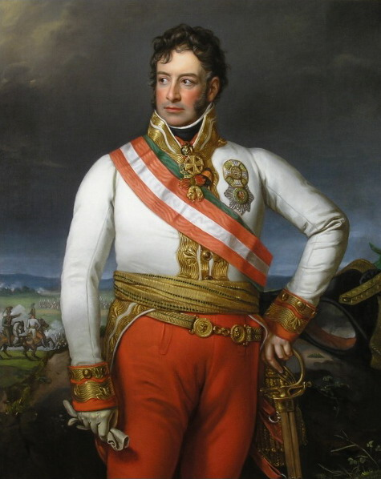
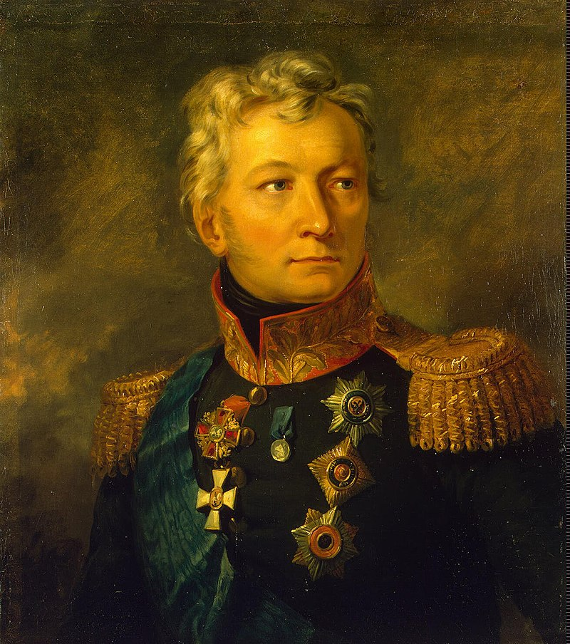
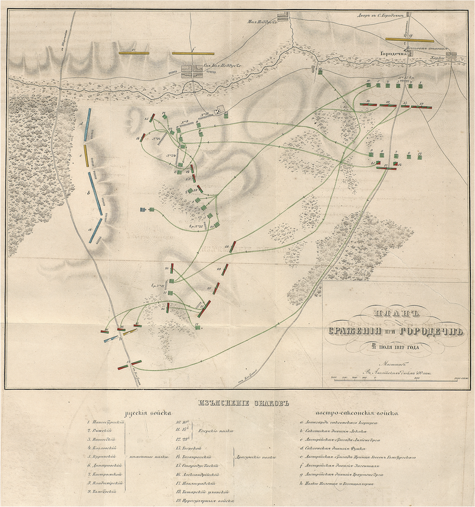

착각과 현실 - "승리하면 모든 문제가 저절로 해결된다"
게시: 2021-01-25T06:30:48+09:00
나폴레옹은 누가 뭐래도 비상한 두뇌의 소유자였습니다. 충성스러운 부하였던 랍(Rapp) 장군은 이때 나폴레옹에 대해서 이렇게 평가했습니다. "그는 라인 강과 모스크바 사이에 어느 부대가 어디에 있는지 병사 하나하나를 모두 다 기억하고 있었다." 충성심 때문에 과장으로 부풀려진 것이 분명한 평가였지만, 실제로 나폴레옹은 네만 강을 건너기 전에, 그의 60만 대군의 모든 연대들과 그 대령급 지휘관들을 모두 기억했다고 합니다. 모스크바 대화재라는 뜻하지 않은 참변 속에서도 그의 명석한 두뇌는 쉴 사이 없이 상황을 분석하고 평가했으며, 그의 계산에 따르면 그의 그랑다르메가 모스크바에 눌러앉아 겨울을 나는 것은 충분히 가능했습니다. 비록 대화재가 많은 것을 파괴하긴 했지만, 모스크바의 창고에는 그의 대군이 적어도 수개월간 먹을 식량이 충분히 남아있었습니다. 뿐만 아니라 화재로 인한 피해를 입지 않은 크레믈린 궁의 무기고에는 대포와 머스켓 소총, 화약과 포탄, 소총 탄약포 등이 풍부하게 쌓여 있었습니다. 능구렁이 쿠투조프의 연극 때문에 워낙 급하게 철수해야 했던 로스톱친이 미처 파괴하지 못했던 군수물자였지요. 따라서 이론적으로는 보급 문제가 전혀 없었습니다. 다만 말 사료는 크게 부족했는데, 이는 나중에 큰 문제를 일으킵니다. 게다가 보충병력의 문제도 해결 중이었습니다. 앞서 언급한 대로 빅토르(Victor) 장군이 네만 강 서쪽에 계속 집결 중이던 신규 징집병들 3만명을 스몰렌스크로 끌고 오고 있었습니다. 그것만으로는 부족하다고 생각한 나폴레옹은 프랑스 국내에서 새로 14만, 이탈리아에서 3만, 바이에른에서 1만, 그 외에 폴란드와 프로이센, 리투아니아에서도 소규모나마 병력을 신규 징집하여 보내도록 지시했습니다. 그 뿐만 아니라, 그의 사랑하는 황후 마리-루이즈(Marie-Louise)에게 편지를 써서 장인어른인 오스트리아 황제 프란츠 1세에게 추가 병력을 잔뜩 보내줄 것을 요청하도록 했습니다. 그랑다르메의 우익, 즉 남쪽 방면은 슈바르첸베르크(Karl Philipp, Fürst zu Schwarzenberg) 대공이 이끄는 오스트리아군 4만이 맡고 있었는데, 이들은 토르마소프(Alexander Petrovich Tormasov)가 이끄는 2만도 안되는 러시아 좌익과 대치하고 있었습니다만 서로 적극적인 공세를 펼치지는 않고 있었습니다. 이들은 지난 8월 고로데치노(Gorodechno)에서 충돌하기도 했으나, 이때도 상호간에 짜기라도 한 것처럼 소극적인 부대 기동만 하다가 흐지부지 떨어진 바 있었습니다. 나폴레옹은 오스트리아군이 맡은 남쪽 전선에서도 더 강한 압박을 해주길 바랬던 것입니다.

(슈바르첸베르크 대공입니다. 그는 나폴레옹보다 2살 어렸는데, 바로 다음해인 1813년에는 대불 연합군 총사령관으로 드레스덴 전투에 참전했다가 나폴레옹에게 그야말로 참패를 당했습니다. 원래 좀 비대한 편이었던 그는 1817년 1차로 뇌졸증을 겪은 바 있었는데, 라이프치히 전투를 기념하기 위해 1820년 라이프치히를 방문했다가 다시 뇌졸증으로 쓰러졌고 결국 거기서 49세의 젊은 나이로 세상을 떴습니다.)

(토르마소프 백작입니다. 그는 당시 60세였고, 다른 러시아 장군들처럼 주로 오스만 투르크와의 전쟁에서 활약했었습니다. 그는 사실 1812년에는 별다른 활약상은 없었고 쿠투조프 사후에 총지휘관으로 잠시 임명되기도 했으나 건강상의 문제로 곧 사임했습니다.)

(고로데치노 전투의 상황도입니다. 별 의미 없습니다.) 그러나 그랑다르메는 오로지 부하들의 보고서와 나폴레옹의 뇌내망상 속에서만 든든했을 뿐이었고, 현실은 녹녹치 않았습니다. 빅토르 군단에 소속되어 9월 중순에 빌나(Vilna)에서 스몰렌스크를 향해 출발한 바덴(Baden)의 빌헬름(Wilhelm) 대공은 다음과 같은 기록을 남겼습니다. "우리가 빌나를 떠나자마자 거의 모든 마을과 농가에서 소그룹의 탈영병들을 볼 수 있었다. 이들은 온갖 핑계를 대고 부대를 이탈한 상태였다." 나폴레옹과 함께 네만 강을 건넌 병력이 40만, 그리고 모스크바에 입성한 병력이 10만이라고 한다면 도중에 30만명이 사라진 셈인데 이들이 다 죽은 것은 물론 아니었고 곳곳에 분산 배치되어 후방으로의 보급로와 통신선을 확보하고 있습니다. 나폴레옹은 특히 빌나와 비텝스크, 스몰렌스크 등 병참 요충지에 병력을 남겨 굳게 지키도록 했습니다. 가령 비텝스크(Vitebsk)에는 가벼운 부상을 입은 푸제(Pouget) 장군이 2문의 대포를 보유한 9백의 병력과 함께 배치되어 있었습니다. 그러나 그건 서류상의 이야기였을 뿐, 실제로 쓸만한 병력은 16명의 헌병과 24명의 신참 근위대원들 뿐이었고 나머지는 모두 잡혀온 낙오병 또는 병원에서 갓 나온 부상병들로 이루어진 오합지졸이었습니다. 이들은 국적도 다양했고 원래 부대에서 떨어져 나왔기 때문에 복무 의지도 전우애도 아무 것도 없었습니다. 심지어 머스켓 손질을 어떻게 하는지도 모르는 병사도 있었다고 합니다. 나중에 결국 그랑다르메가 후퇴할 때, 이들은 지평선에 한줌의 코삭 기병대가 나타나자마자 우르르 대오를 풀고 달아났고 덕분에 푸제 장군까지 포로가 되어야 했습니다. 푸제 장군은 만약 자신이 그 40명의 헌병과 신참 근위대에 대해서만 책임을 져야 헀다면 그들을 데리고 무사히 귀국할 수 있었을 것이라고 분통을 터뜨렸습니다. 중요 병참기지인 비텝스크가 이 모양이었으니 비텝스크와 스몰렌스크, 모스크바 사이에 흩어진 작은 마을들의 사정은 더 말할 나위가 없었습니다. 이런 마을들에도 그랑다르메 병사들이 수십명씩 우글거리고 있었는데, 이들은 결코 정식 명령에 의해 배치된 것이 아니었습니다. 굶주린 강행군 속에서 낙오된 각국 병사들이 자연스럽게 프랑스 병사를 우두머리로 하여, 일종의 지방 군벌이나 산적처럼 프랑스군 보급마차나 연락병들이 오가는 주도로에서 좀 떨어진 마을을 점령하고 현지 주민들로부터 보호세를 갈취하며 먹고 살고 있었습니다. 이런 현실은 나폴레옹의 후방 위무 정책에 대한 반쯤 의도적인 소홀함 때문에 더 악화되었습니다. 원래대로라면 점령지에는 프랑스 병참 장교들이 들어와 임시 행정구역을 나누고 주민들로부터 체계적인 징발을 하는 등 행정 활동을 해야 했습니다. 그러나 '알렉산드르에 대한 선의와 우정'을 가지고 시작했다는 이 기묘한 전쟁에서, 나폴레옹은 프랑스군이 러시아의 영토를 탐내거나 러시아에 혁명을 일으키려 한다는 오해를 주지 않기 위해서 농노 해방령도 내리지 않았고 행정 체계도 잡지 않았습니다. 하긴 러시아가 너무 넓었으므로 이탈리아나 독일에서처럼 후방 행정에 신경을 썼더라도 관리가 되지 않았을 것입니다. 덕분에 후방에 대한 모든 조치가 엉망진창이었습니다. 스몰렌스크 전투가 벌어진지 6주가 지나고 모스크바가 이미 홀랑 타버린지 2주가 지난 9월말까지도, 그랑다르메의 주요 병참기지 중 하나였던 스몰렌스크에는 아직도 전사자들의 시체가 길거리에 아무렇게나 널브러져 있었고 그 시체를 들개들이 파먹고 있었습니다. 뿐만 아니라 보로디노 전투에서 나폴레옹이 묵었던 콜로츠코예(Kolotskoie) 수도원 등 보로디노 일대의 건물에는 보로디노 전투의 프랑스군 부상병 수천명이 빽빽히 수용되어 있었는데, 이들을 위한 의료품은 커녕 아무런 보급품이 주어지지 않았습니다. 이런 병원들의 책임을 맡고 있던 병참 장교 케르고르(Bellot de Kergoree)의 기록에 따르면 아무도 이들에게 먹을 것을 주지 않았기 때문에, 이들 중 기어다닐 수 있는 자들은 병원 밖으로 기어나가 행인들에게 구걸을 해서 연명했고, 케르고르 자신도 스몰렌스크-모스크바 대로를 지나가는 보급품 마차에서 먹을 것을 훔쳐야 했다고 합니다. 부상자들을 위한 먹을 것은 고사하고 마실 물도 없었는데, 인근 개천에서 물을 떠오려고 해도 물통은 커녕 아무런 그릇도 주어지지 않았기 때문입니다. 나폴레옹은 이런 현실을 전혀 모르고 있었을까요? 처음에는 그랬을 수도 있습니다. 그러나 나폴레옹은 20년 이상 전투 현장에서 뼈가 굵은 백전노장이었습니다. 그가 크레믈린에 앉아 오지 않는 알렉산드르의 답장을 마냥 기다리고 있을 때, 부하들로부터 후방의 참담한 소식을 점차 들을 수 밖에 없었습니다. 충직한 랍 장군도 원정 도중에 참전하여 스몰렌스크에서야 나폴레옹의 사령부에 합류한 사람이었는데, 그때도 랍은 '프랑스군의 후방에는 패배하여 후퇴하는 부대보다 더 많은 사람과 물자가 널브러져 있다'라고 나폴레옹에게 직언을 했습니다. 이렇게 암담한 현실에서 벗어나게 해줄 것은 여태까지 나폴레옹 본인이 부하들에게 했던 "전쟁에는 수많은 난제가 따라다니지만 승리하면 그 모든 문제가 저절로 해결된다" 라는 말이었습니다. 그래서 나폴레옹은 이 모든 문제를 해결해줄 짜르와의 평화 협정에 더욱 애간장을 태웠던 것입니다. 그래서 나폴레옹은 위에서 언급한 것처럼 동맹국들과 프랑스 본국에게 보충병력을 새로 징집하여 보내라고 하면서 비밀 지시를 함께 내렸는데, '반드시 실제 병력보다 2배의 병력을 파견하는 것으로 신문에 발표하라'는 것이었습니다. 이를 통해 알렉산드르를 절망으로 몰아가겠다는 것이었습니다. 이렇게 나폴레옹이 골머리를 앓는 동안, 상트 페체르부르그의 알렉산드르는 어떤 상황이었을까요? 무엇이 그를 그토록 강인하게 만들었을까요? 알고보면 그쪽 사정도 무척 어이가 없었습니다. Source : 1812 Napoleon's Fatal March on Moscow by Adam Zamoyski The Life of Napoleon Bonaparte, by William Milligan Sloane
en.wikipedia.org/wiki/Alexander_Tormasov
en.wikipedia.org/wiki/Karl_Philipp,_Prince_of_Schwarzenberg